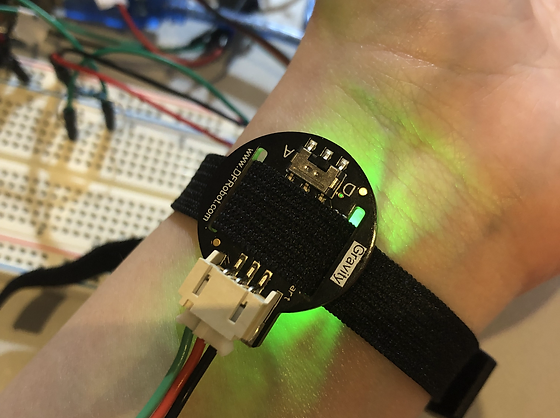
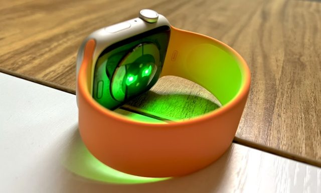

I plan to use a iterative design process as it is efficient and timely and will reduce errors.
The plan for my project will revolve around using the same method used by the "pre-existing solutions" to determine the user’s heart rate and stress level. I will use a pulse sensor to gather the pulse data. However, the data then received from said pulse sensor must then be read and saved by an embedded system, for it to have any use. For this I intend to use a “MicroBit,” as programming a "MicroBit" is extremely intuitive because it includes built-in features such as a 5x5 LED display, 2 buttons, and a speaker. Many other embedded systems such as "Arduino" and "Raspberry Pi", have their own complexities or pre-requisites required to programme them and did not include such features. Furthermore, I plan to use a "SEN0203" pulse sensor as it emits green light, which will reduce error according to my previous research done in the investigation.
The plan for my project will revolve around using the same method used by the "pre-existing solutions" to determine the user’s heart rate and stress level. I will use a pulse sensor to gather the pulse data. However, the data then received from said pulse sensor must then be read and saved by an embedded system, for it to have any use. For this I intend to use a “MicroBit,” as programming a "MicroBit" is extremely intuitive because it includes built-in features such as a 5x5 LED display, 2 buttons, and a speaker. Many other embedded systems such as "Arduino" and "Raspberry Pi", have their own complexities or pre-requisites required to programme them and did not include such features. Furthermore, I plan to use a "SEN0203" pulse sensor as it emits green light, which will reduce error according to my previous research done in the investigation.
Pulse Sensor

Watch

The function of the "Microbit" will be vital to my project. It will continuously collect analogue values from the pulse sensor, while simultaneously analyzing
them in an attempt to recognize a pulse. Once a pulse is recognized the "Microbit" will make a sound using its speakers. Then by counting the number of pulses
in a set time interval, it will determine the heart rate of the user. Then, using a serial port connection, it should send the heart rate to an external python
file which then saves this data to a CSV file for later usage, while also displaying the heart rate on the 5x5 LED display. This CSV file would act as databases,
in which I would store all relevant data for later use in calculating the rate of change of the user's heart rate. It is important to note that my artefact's code
consists of a primary file called "main.py" which does the majority of computing, and a secondary file called "project_functions.py" which retrieves and cleans the
serial data sent by the MicroBit.
Finally, it would find the heart rate variability (stress) of the user, by means of finding the difference between two consecutive values for the rate of change of the user's average heart rate. This data would be stored in the same CSV file to be graphically displayed upon the user's request, via "MicroBit" button inputs.
This process is further explained through a detailed architecture diagram, seen on the right, which gives a general overview of how the system will function:
Finally, it would find the heart rate variability (stress) of the user, by means of finding the difference between two consecutive values for the rate of change of the user's average heart rate. This data would be stored in the same CSV file to be graphically displayed upon the user's request, via "MicroBit" button inputs.
This process is further explained through a detailed architecture diagram, seen on the right, which gives a general overview of how the system will function:
This design will meet the requirements set out in the brief because:
- It will utilize a fully automated MicroBit which will use the digital inputs of MicroBit buttons to allow the user to interact with the python programme, and the analogue input of the "SEN0203" pulse sensor. It will also use the digital output of the MicroBit's 5x5 LED display to show the user's heart-rate and the analogue output of the MicroBit's built-in speaker to signify an updated heart rate.
- The MicroBit will validate the data received from the pulse sensor by only accepting an analogue value withing a realistic threshold, and stores it in a list.
- The programme will analyse your current stress level and calculate whether each value is above a certain threshold, in which case it will suggest ways of reducing this stress by instructing the user to preform deep breathing exercises or cardio.
- Using Python, I will create a computer model based a CSV dataset of wellbeing data collected, generated programmatically by the MicroBit and python script. The dataset will contain multiple descriptive features of wellbeing (heart rate and stress level). The model will be capable of asking two 'what if' type questions, related to the user's cardiovascular health.
- Each 'what if' question will use three validated parameters (heart rate, age, gender) with two data types (integer, string) and offers the user insights into their cardiovascular fitness.
- The user will be able to view their stress levels and heart rate over time in graphical format which displays their data throughout their use of the system.
- It will allow the user to monitor their stress levels and heart rates.
- It will provide the user with ways of reducing their stress levels and heart rates.
- It will be fully-autonomous, to ensure it is user friendly and has a universal design to enhance the UX.
- It will be is as portable as the pre-existing solutions determined by my survey.